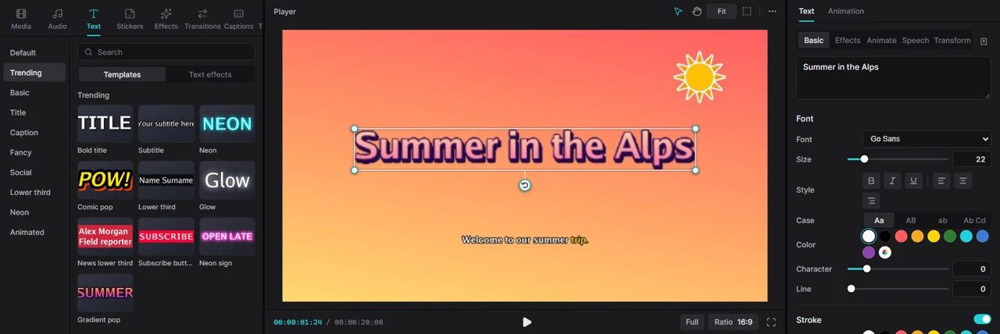
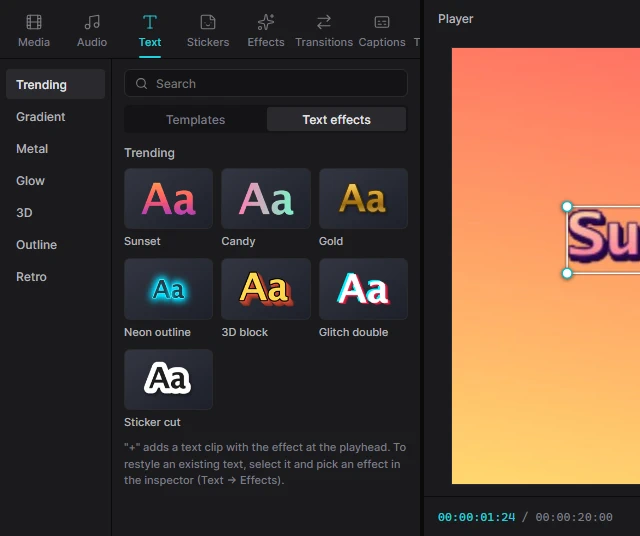
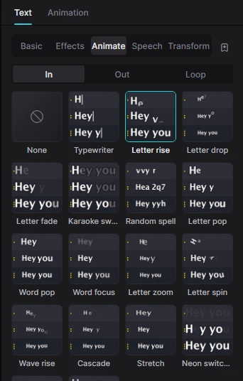

Для людейТворчість5 хв читання
Текст і заголовки
Заголовки, підписи, нижні титри й виноски — усе це текстові кліпи. Почніть із шаблону або звичайного тексту, а потім налаштуйте й анімуйте його в інспекторі.

Додати текст
-
Поставте курсор відтворення
Новий текст з’являється з позиції курсора відтворення, тож спершу поставте курсор туди, де має з’явитися текст.
-
Оберіть шаблон
Відкрийте вкладку Text. У режимі Templates категорія Default містить простий білий текст, а решта — 175 готових стилів: Trending, Basic, Title, Caption, Fancy, Social, Lower third (нижні титри), Neon і Animated, а також Vlog, Quote (цитати), Sale (знижки), Luxury, Gaming, Love, Travel, Food, Sports, News, Minimal, Impact і Kinetic. Клацніть картку, щоб побачити її назву й опис; наведіть мишу на анімований шаблон — і він заграє.
-
Додайте його
Натисніть + на картці, клацніть її двічі або перетягніть на таймлайн. На текстовій доріжці з’явиться текстовий кліп (простий текст — на 3 секунди), уже виділений і готовий до редагування.
Змінити слова
Коли текстовий кліп виділено, інспектор показує вкладку Text. Введіть свої слова у велике поле вгорі розділу Basic; Enter — новий рядок. Зміна застосовується, щойно ви клацнете в іншому місці.
Щоб змінити, скільки часу текст на екрані, тягніть краї його кліпу на таймлайні. Щоб розмістити текст, тягніть його в плеєрі.
Шрифт, розмір і колір
Розділ Font у Text → Basic містить:
- Font — клацніть назву шрифту, щоб відкрити вибір шрифтів: пошук, фільтри за стилем (Sans, Serif, Display, Handwriting, Monospace, Pixel) і Cyrillic, ваші шрифти в My fonts і безкоштовні в More fonts, які завантажуються одним клацанням. Якщо в шрифті бракує літер (кирилиці чи інших абеток), їх автоматично домальовує відповідний системний шрифт. Докладно — на сторінці Шрифти.
- Size (розмір), Bold, Italic, Underline та вирівнювання ліворуч / по центру / праворуч.
- Case — регістр: Aa (як введено), AB (великі літери), ab (малі), Ab Cd (кожне слово з великої). Ваш початковий текст зберігається, тож можна повернутися.
- Color — колір зі зразків або з палітри.
- Character і Line — відстань між літерами та між рядками.
Обведення, тло, тінь і світіння
Під налаштуваннями шрифту в Text → Basic — розділи, які вмикаються власним перемикачем. Кожен має свій колір і повзунки:
| Розділ | Що додає |
|---|---|
| Stroke | Обведення навколо літер — текст читається навіть на строкатому тлі. |
| Extra outline | Друге й наступні обведення — ефект «наліпки». |
| Background | Плашка під текстом із прозорістю та заокругленими кутами. |
| Box style | З’являється, коли увімкнено Background: окрема плашка під кожним рядком (стрічкові субтитри), нахил, відступи, рамка, тінь під плашкою, градієнт і Cut-out — літери, вирізані з плашки, крізь які видно відео. |
| Shadow | Тінь із прозорістю, розмиттям, відстанню й кутом. |
| Glow | М’яке світіння навколо літер (інтенсивність і радіус). |
| Gradient fill | Заливка літер кількома кольорами — лінійним або радіальним градієнтом під будь-яким кутом. |
| 3D extrude | Об’ємна 3D-глибина за літерами: колір, глибина й кут. |
| Curve | Вигинає рядок дугою — Bend понад нуль вигинає вгору, менше нуля — вниз. |
Word art (текстові ефекти)
Текстові ефекти — готові образи одним клацанням: їх 114 у 16 категоріях — Gradient, Metal, Glow, 3D, Outline і Retro, а також Luxury (золото, мармур, тиснення), Neon, Candy (глянцеві, надуті, мов кулька, літери), Texture (карбон, шотландка, растр), Sticker, Hand-made (каракулі, олівець, акварель), Spooky (слиз, патьоки), Gaming і Cute. Деякі мерехтять чи виблискують — наведіть мишу на картку, щоб побачити.
- Для нового тексту: на вкладці Text перемкніться з Templates на Text effects і додайте картку — отримаєте текст у цьому стилі.
- Для наявного тексту: виділіть його й відкрийте Text → Effects в інспекторі. Оберіть картку або None, щоб прибрати ефект.
Ефект просто заповнює налаштування тексту (градієнт, світіння, обведення, 3D і додаткові ефекти нижче), тож потім його можна підправити.

Візерунки, фаска, блискітки та інше
Під картками ефектів у Text → Effects — «цеглинки», з яких складається word art. Вмикайте будь-які й поєднуйте як завгодно:
| Розділ | Що додає |
|---|---|
| Pattern | Візерунок поверх літер — 28 видів: смужки, клітинка, шотландка, горошок, сердечка, глітер, голографічна фольга, веселка, галактика, мармур, дерево, камуфляж, леопард тощо. Повзунок Motion змушує його рухатися. |
| Bevel & emboss | Освітлює літери як рельєфну поверхню: гостра фаска або округла «надута» форма, з напрямком світла, контрастом і глянцем. |
| Inner shadow та Inner glow | Тінь або світло всередині літер — для витиснених, вирізаних літер чи неонових трубок. |
| Echo stack | Кольорові копії тексту одна за одною, як у заголовках 70-х і 80-х, — суцільні або контурні. |
| Texture | Wear — потертість (гранж, крейда, штамп, спрей, подряпини, старий друк), Hand-made — легке тремтіння, як від маркера, і Pixels — піксельна графіка. |
| Sparkles | Маленькі зірочки-відблиски на літерах; Twinkle змушує їх мерехтіти. |
| Drips | Патьоки фарби чи слизу, що стікають із літер. |
| Stroke gradient | Обведення в кілька кольорів замість одного. |
Рухомий візерунок або мерехтливі блискітки анімують текст самі собою — ключові кадри не потрібні.
Побуквена анімація

Відкрийте Text → Animate. Ці 137 анімацій рухають літери й слова всередині тексту:
- In (55) — як текст з’являється: Typewriter (друкарська машинка), Letter rise, Karaoke sweep, Decrypt (розшифрування), Split-flap (табло, що перегортається), Terminal, Jelly pop, Rain drop, Glitch in та інші;
- Out (45) — як зникає: Implode, Erase, Unzip, Burn out…;
- Loop (37) — рух, що повторюється, поки текст на екрані: хвиля, пульсація, гудіння неону (Neon buzz) чи глітч-смикання.
Клацніть картку, щоб застосувати, і задайте Duration (для циклу — Period) під сіткою. None прибирає анімацію.
Вони поєднуються з анімаціями кліпу на вкладці Animation (In, Out, Combo, Loop), які рухають увесь текстовий кліп, — поява, виїзд, наближення, підстрибування.
Інші можливості тексту
- Text → Transform — точне положення, масштаб, поворот і змішування тексту.
- Text → Speech — зачитує текст комп’ютерним голосом і кладе озвучення під нього. Див. Озвучення тексту.
- Зберегти в My kit — кнопка-закладка поруч із підвкладками зберігає стиль, щоб застосовувати його до інших текстів у будь-якому проєкті. Див. My kit.
- Для субтитрів, що йдуть за мовленням, краще скористатися автосубтитрами, ніж набирати їх вручну.
Тримайте важливий текст у безпечній зоні: увімкніть безпечні зони в плеєрі, особливо для вертикального відео.